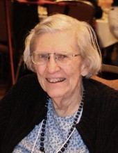

Please note: the AAS Obituaries are temporarily being hosted on this website while their full content is being ingested into the PubPub publishing platform newly adopted by the Bulletin of the American Astronomical Society. When the migration is complete, your existing links will take you to the final, migrated content. Contact peter.williams@aas.org with any questions.
Martha Stahr Carpenter (1920-2013)
Martha Elizabeth Stahr Carpenter passed away on February 12, 2013 after a brief illness. She was 92 years old. “Patty” Carpenter was born in Bethlehem, Pennsylvania on May 29, 1920. Raised in an academic home, her father, Dr. Henry I. Stahr, was the second president of Hood College in Frederick, Maryland. She received a BA from Wellesley, and MS and PhD degrees in astronomy from the University of California-Berkeley. After completing her PhD in 1945 she taught at Wellesley for two years.
Patty joined Cornell University as a radio astronomer in 1947, the first woman faculty member in the College of Arts and Sciences. One of the first graduate students she worked with at Cornell was Vera Cooper Rubin, and she acted as advisor for Rubin’s M.A. thesis on dynamics of galaxies apart from Hubble flow. Rubin credits Patty’s own interest in galactic dynamics with guiding her to pursue the subject, and also noted that Patty was very supportive of her work, especially her early research on the topic. During Patty’s two decades at Cornell she studied radio emissions from the sun and produced a series of bibliographic compendiums of radio astronomy research from around the world, the first time such work had been collected for use by the growing radio astronomy community. In 1954 she spent a sabbatical in Australia using the Potts Hill radio telescope to observe 21-cm radio emissions from the Milky Way. The resulting papers by her and collaborators F.J. Kerr and J.V. Hindman produced the first Southern Hemisphere mapping of the spiral structure of our galaxy. In 1969 after the retirement of her husband, Cornell professor of Industrial and Labor Relations Jesse Thomas Carpenter, they and their two daughters moved to Charlottesville, Virginia, where she became a faculty member at the University of Virginia. She retired in 1985 but remained involved in the university community.
Patty was very active in the American Association of Variable Star Observers (AAVSO). She joined the organization while at Wellesley (becoming a life member in 1946) and built a telescope with help from the Amateur Telescope Makers of Boston. Under the observer code SME she contributed 396 visual observations to the AAVSO between 1940 and 1950. Later as a teacher she also encouraged her students to contribute observations to the AAVSO. A three-term president, her service to the organization spanned the critical period in which the organization left Harvard and became an independent entity. She was elected to the Council in 1946 becoming President in 1951 and successfully dealt with a move to new headquarters, funding problems, the split with Harvard, and the resignation of the then first vice president. Her third consecutive term largely centered on acquiring financial independence, an important step in securing the future of the AAVSO. She served on the Endowment Committee from 1954-64 and later a second stint on the Council (1970-73). While at UVA she encouraged then graduate student Janet Akuyuz (later Mattei) to become involved with the AAVSO and was a vocal supporter of Janet’s application to become Director of the organization. Patty was delighted to be contacted in 2011 in the run-up to the Centennial celebration. She and her elder daughter, Alice Moat, were guests of the organization at that meeting, and Alice is now an AAVSO member herself.
Patty’s years at the University of Virginia were focused on work in galactic structure and teaching. She was an active participant in the UVA parallax program, ensuring the quality of the large number of plates taken with the 26-inch refractor and the proper organization of the resulting data. In collaboration with two of her students, T. E. Corbin and R. E. Schmidt, she oversaw a new solution for the distances, motions, and space distribution of the Hyades Cluster based on the latest proper motions from the US Naval Observatory and the best available parallax and radial velocity data. She also studied the high proper motion, low metallicity, visual binary 85 Pegasi.
Patty is fondly remembered as a teacher and mentor of astronomy students during her tenure at UVA. Whether it was a PhD candidate or non-major undergraduate she was patient and thorough. It usually did not take the student long to realize that this was someone who cared about individuals as well as the subject. She used innovative, and sometimes deceptively simple, techniques to clarify concepts even in graduate courses. She also focused on helping undergraduates organize and conceptualize astronomical data providing them with skills that they carried into their later careers. Thus it is not surprising that some of her students continued to remember her fondly after leaving UVA and remained in touch up to the time of her death.
In retirement Patty maintained her connections with astronomy and especially enjoyed following the research activities of former students and colleagues. Other interests were stamp collecting and bridge. She particularly enjoyed road trips in the United States and Canada with her two daughters Alice and Sally. These activities all contributed to maintaining the mental acuity she exhibited during her long and productive career.
For more information on Martha Carpenter’s life, career, and service to the AAVSO, see JAAVSO 40 (2012): 51-64.
Obituary written by: Kristine Larsen (Central Connecticut State University), Thomas Corbin (US Naval Observatory, retired)
Additional links:
BAAS Citation: BAAS, 2013, 45, 028